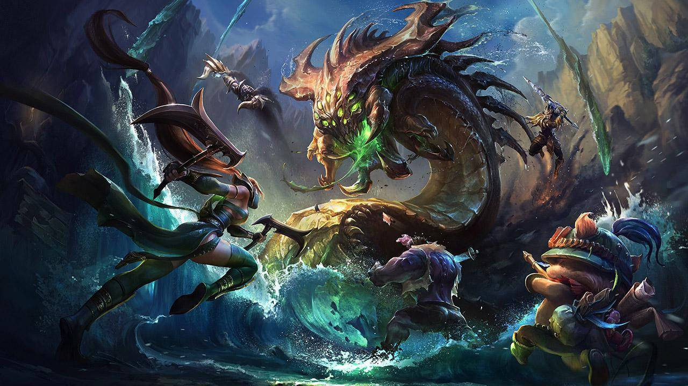
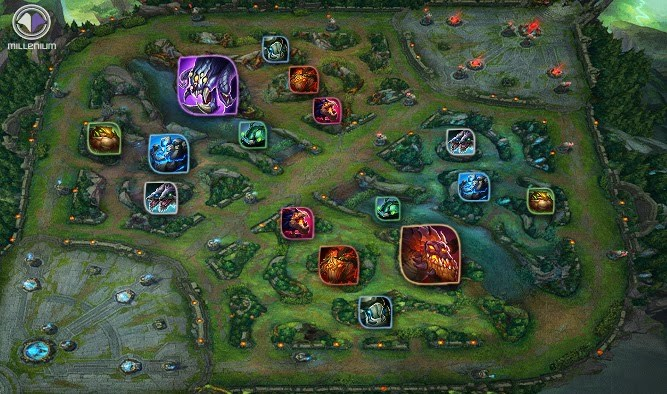

La jungla es la posición más particular de todo el League of Legends. Una zona neutral difícil para los inexpertos que se aventuran a empezar a jugar en esta posición. Asestar el último golpe a los súbditos deja de ser una preocupación, pero surgen otras muchas que van desde nuestra ruta o (pathing) hasta en qué momento debemos o no realizar emboscadas (ganks) a las líneas para tratar de decantar la partida en favor de nuestro equipo.

La jungla es diferente. En lugar de una sola línea tendremos influencia a lo largo de cuatro áreas del mapa divididas por la calle central y el río. En principio, las dos zonas que van de nuestra base al río serán nuestra jungla, mientras que el par restante será el área de influencia del rival. Sin embargo, hay formas de cambiar esta predisposición.
¡Todo esto lo puedes descubrir dentro del juego, Animate!